#1 · BZUSDT09-03 09:00 → 09-03 13:00
-0.91%
entry 95.77 stop 94.9 target 97.51 exit 94.9 stop -0.91% fwd +1h -0.36% +4h -1.57% +8h +1.10% +24h +0.19%
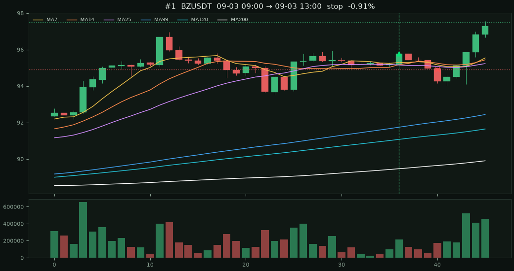
USDT 永續 · MA7>14>25>99>120>200 且收盤量 > 前一根 × 2
· 收盤在 MA25 上方且離 MA25 ≤ 1.5%（像 BNB）
· 只要收漲陽線（收盤 > 開盤）
收盤進場；停在訊號 K 低（太窄則 0.5%）、目標 2R、或 8 根時間停。
同標的重疊訊號預設不重做。加總％是各筆相加，不是組合複利。
掃 231 檔 · 原始訊號 28 · 進場 24
· 陽線 24
出場：2R 7 · 停損 4 · 時間 7 · 未平 6
· 收盤後 +1h +0.40% · +4h +1.13%
· +8h +1.17% · +24h +1.58%
entry 95.77 stop 94.9 target 97.51 exit 94.9 stop -0.91% fwd +1h -0.36% +4h -1.57% +8h +1.10% +24h +0.19%

entry 0.2678 stop 0.2647 target 0.274 exit 0.2647 stop -1.16% fwd +1h +0.82% +4h -0.15% +8h +2.54% +24h +1.68%
entry 599.85 stop 596.851 target 605.848 exit 605.848 target +1.00% fwd +1h -0.13% +4h +0.29% +8h +2.44% +24h +2.26%
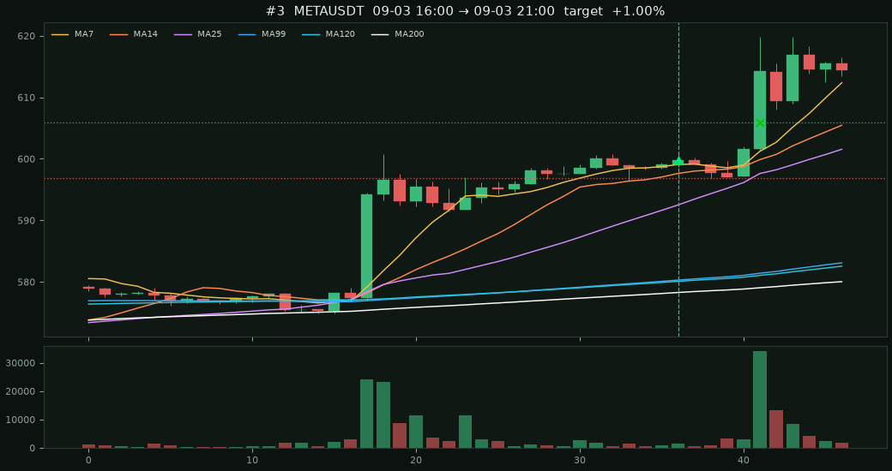
entry 0.02009 stop 0.0199 target 0.02047 exit 0.02047 target +1.89% fwd +1h +5.53% +4h +10.20% +8h +2.99% +24h +3.09%
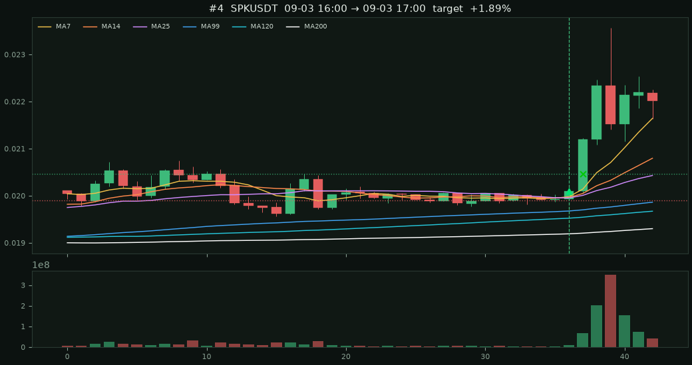
entry 362.08 stop 359.86 target 366.52 exit 366.52 target +1.23% fwd +1h +0.44% +4h +5.73% +8h +4.04% +24h +0.98%
entry 0.07925 stop 0.07457 target 0.08861 exit 0.07961 time +0.45% fwd +1h -0.79% +4h +2.83% +8h +0.45% +24h -0.26%
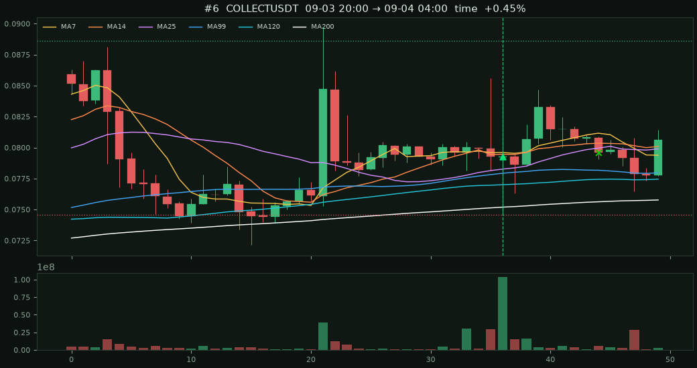
entry 91.5 stop 90.75 target 93 exit 91.73 time +0.25% fwd +1h +0.04% +4h +0.21% +8h +0.25% +24h -0.14%
entry 328.28 stop 326.639 target 331.563 exit 327.47 time -0.25% fwd +1h +0.01% +4h +0.01% +8h -0.25% +24h -2.29%
entry 0.3699 stop 0.36 target 0.3897 exit 0.3766 time +1.81% fwd +1h -0.30% +4h -0.24% +8h +1.81% +24h -6.03%
entry 2.518 stop 2.501 target 2.552 exit 2.552 target +1.35% fwd +1h +0.64% +4h +1.39% +8h +1.63% +24h -1.63%
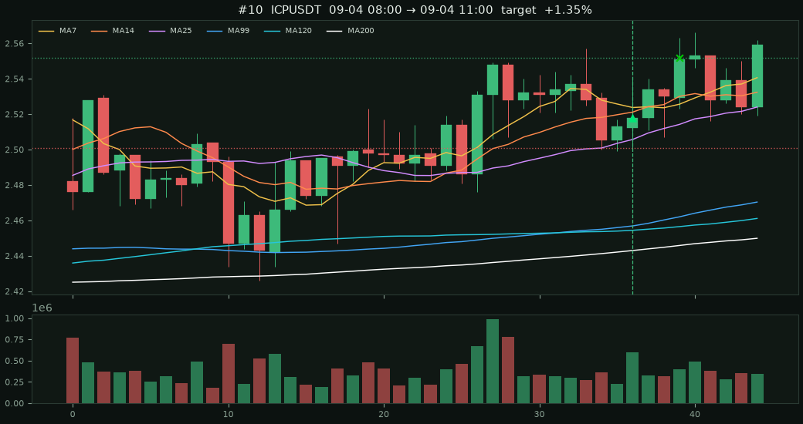
entry 1562.73 stop 1548.53 target 1591.13 exit 1591.13 target +1.82% fwd +1h -0.37% +4h +0.75% +8h +2.10% +24h +10.68%
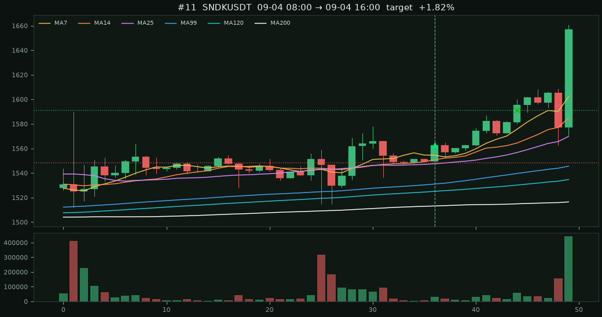
entry 0.0275 stop 0.02699 target 0.02852 exit 0.02699 stop -1.85% fwd +1h -0.18% +4h -2.36% +8h -0.95% +24h -1.09%
entry 0.00267 stop 0.002643 target 0.002724 exit 0.002724 target +2.02% fwd +1h +2.77% +4h +0.11% +8h -3.03% +24h +15.13%
entry 231.71 stop 230.551 target 234.027 exit 230.551 stop -0.50% fwd +1h -0.12% +4h +0.31% +8h -0.38% +24h -0.43%
entry 230.83 stop 229.676 target 233.138 exit 230.26 time -0.25% fwd +1h -0.11% +4h -0.30% +8h -0.25% +24h —
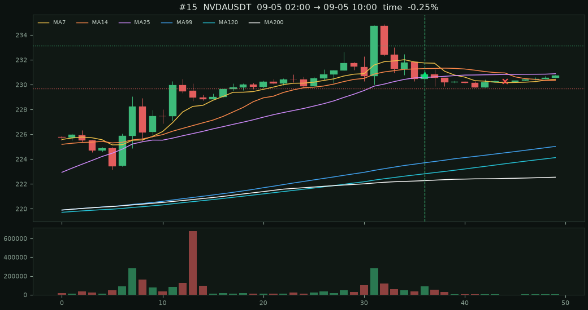
entry 522.11 stop 519.499 target 527.331 exit 522.38 time +0.05% fwd +1h -0.08% +4h -0.01% +8h +0.05% +24h —
entry 95.53 stop 95.0524 target 96.4853 exit 96.12 time +0.62% fwd +1h +0.21% +4h +0.28% +8h +0.62% +24h —
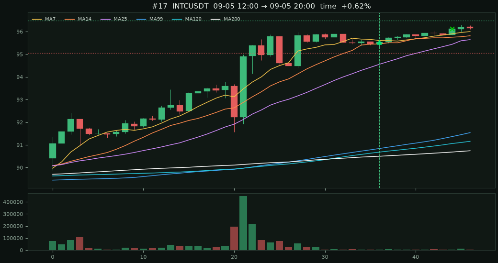
entry 727.69 stop 721.99 target 739.09 exit 739.09 target +1.57% fwd +1h +1.52% +4h +2.88% +8h +5.86% +24h —
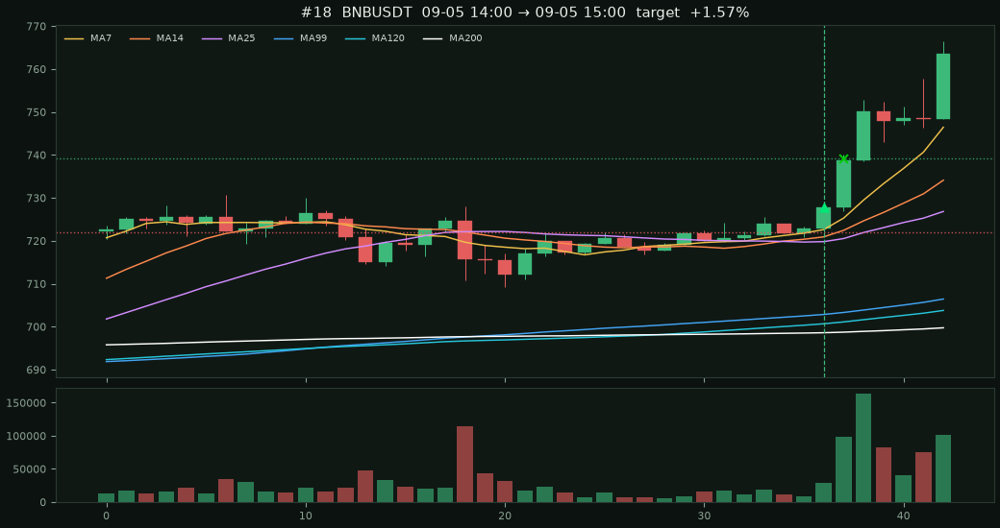
entry 95.86 stop 95.3807 target 96.8186 exit 96.31 open +0.47% fwd +1h +0.05% +4h — +8h — +24h —
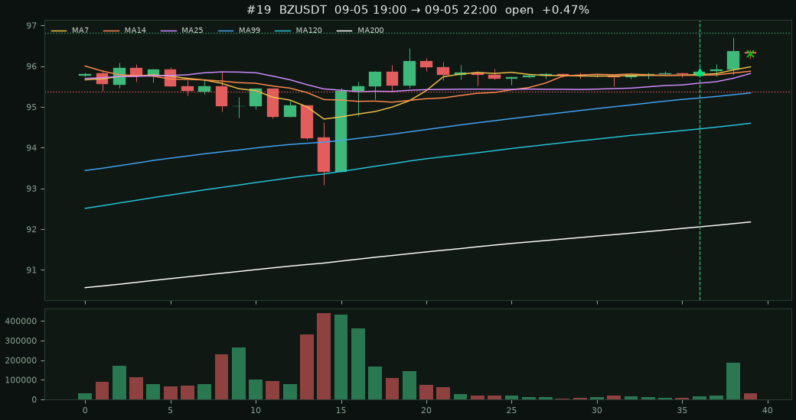
entry 91.24 stop 90.7838 target 92.1524 exit 91.54 open +0.33% fwd +1h +0.11% +4h — +8h — +24h —
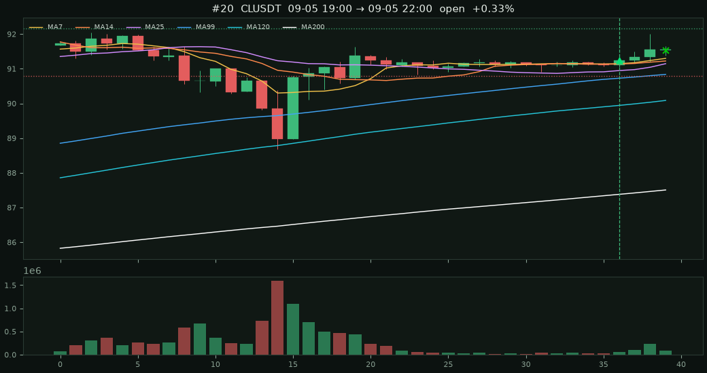
entry 11.831 stop 11.72 target 12.053 exit 11.881 open +0.42% fwd +1h +0.08% +4h — +8h — +24h —
entry 614.86 stop 611.786 target 621.009 exit 614.3 open -0.09% fwd +1h -0.05% +4h — +8h — +24h —
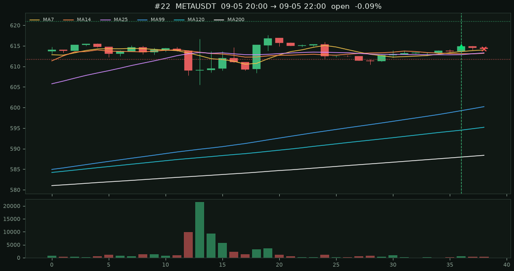
entry 523.75 stop 521.131 target 528.987 exit 522.76 open -0.19% fwd +1h -0.19% +4h — +8h — +24h —
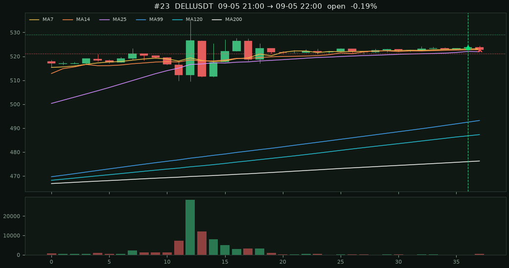
entry 96.19 stop 95.709 target 97.1519 exit 96.14 open -0.05% fwd +1h -0.05% +4h — +8h — +24h —
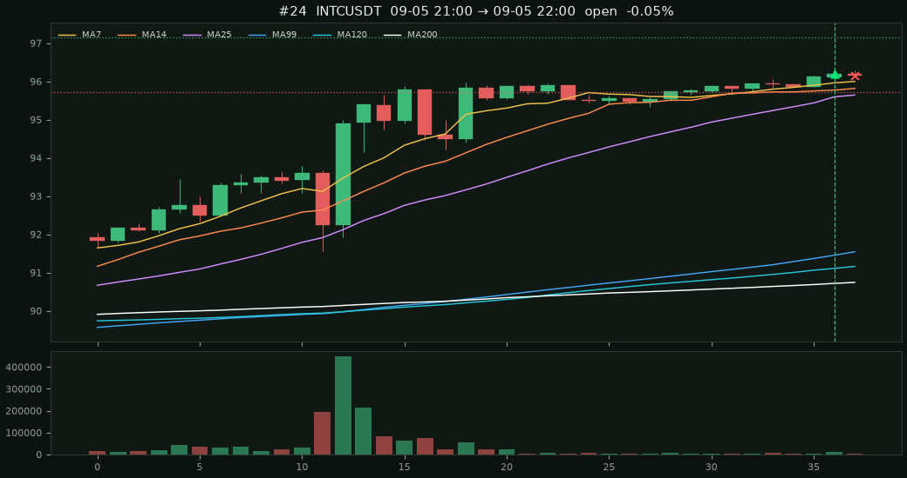